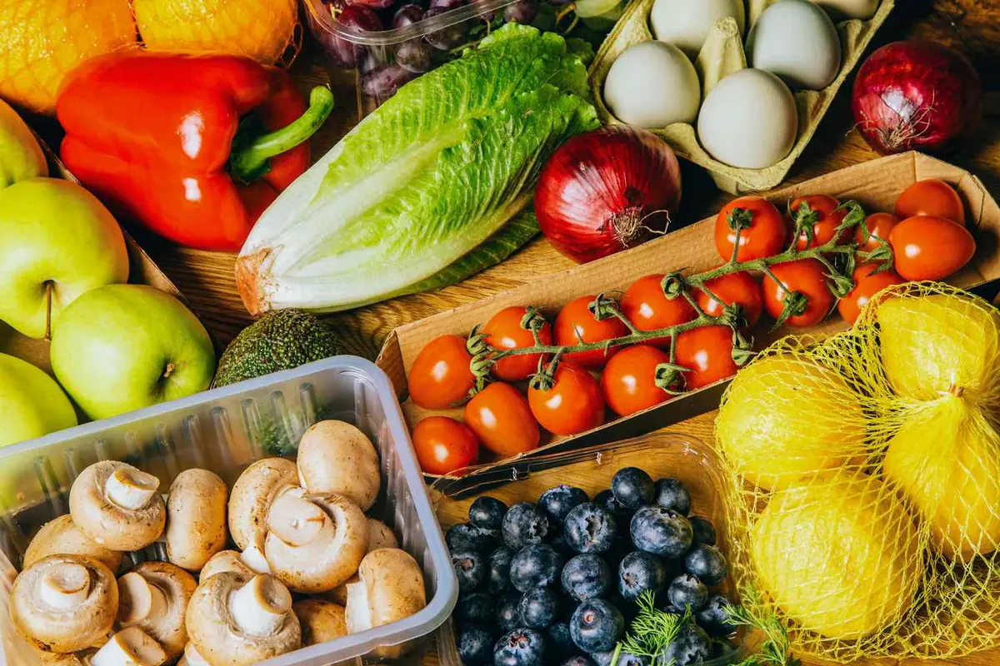

Palm Beach County · Refrigerated daily routes
Restaurant wholesale produce delivery in Lake Park, FL
We supply chef-owned bistros and cafes, brewery and maker-district kitchens, and kitchens across Lake Park with refrigerated wholesale produce — split cases, standing orders, no order minimums, and 7-day next-day delivery.
- Refrigerated routes
- Split cases
- 7-day delivery
Palm Beach County restaurant routes
Produce built for Lake Park kitchens
Lake Park is north county's sleeper food town. Its historic Park Avenue downtown has quietly filled with chef-owned bistros, a brewing scene, and maker-space kitchens taking advantage of rents the fancier zip codes nearby can't offer — while the town's harbor marina adds waterfront covers and the Northlake corridor carries the volume traffic.
Emerging food districts need a supplier that treats small accounts seriously, because this year's two-table bistro is next year's expansion. No minimums, split cases, and by-the-pound ordering let Park Avenue kitchens buy sharp; the midnight cutoff and 7-day routes — about fifty minutes out of Pompano Beach — keep weekend service covered as the crowds find them.
- Order by 12 AM for next-day delivery on most restaurant produce items.
- Use standing orders for prep staples and update specials as menus change.
- No order minimums, no delivery fees, and no fuel charges on local routes.
From our Pompano Beach warehouse
About 50 minutes from our Pompano Beach warehouse on the north county leg — Park Avenue and marina stops land in the morning window.
Where we deliver in Lake Park
- the Park Avenue downtown
- the Lake Park Harbor Marina
- the Northlake Boulevard corridor
Set up delivery in Lake Park
Send your prep list, delivery window, and weekly volume. We will build an order guide and get your account ready for online ordering.
Talk to salesRestaurant-first service
What Lake Park kitchens order
Berries
Strawberries, blueberries, raspberries, and blackberries for breakfast, pastry, and bar programs.
See varietiesFresh Herbs
Basil, cilantro, parsley, mint, rosemary, thyme, and garnish herbs in kitchen-real quantities.
See varietiesCitrus & Tropical Fruit
Limes, lemons, oranges, mango, pineapple, papaya, and avocado for bars, breakfast, and dessert.
See varietiesCertified Organic
Certified organic staples and sourced-on-request organic items for menu claims that hold up.
See varietiesLocal delivery FAQ
Lake Park produce delivery questions
Do you work with new and small restaurants in downtown Lake Park?
Yes. No minimums and split cases are built for emerging kitchens — start small, and the account scales as your covers grow.
Can marina and waterfront kitchens in Lake Park get weekend delivery?
Yes. Routes run seven days, so waterfront spots with big weekend swings can restock Saturday night for Sunday service.
Do you deliver specialty produce to Lake Park?
Yes. Microgreens, edible flowers, specialty mushrooms, tropical fruit, and seasonal specialty items ride the same route as your staple cases.
Can Lake Park restaurants order split cases?
Yes. We offer full cases, split cases, and select by-the-pound items so Lake Park kitchens can control waste and food cost while keeping menus fresh.
Nearby routes
Related local produce pages
Let us build a Lake Park produce order around your service.
Tell us what your Park Avenue kitchen or marina spot is building — we will supply it like it is already the neighborhood anchor.